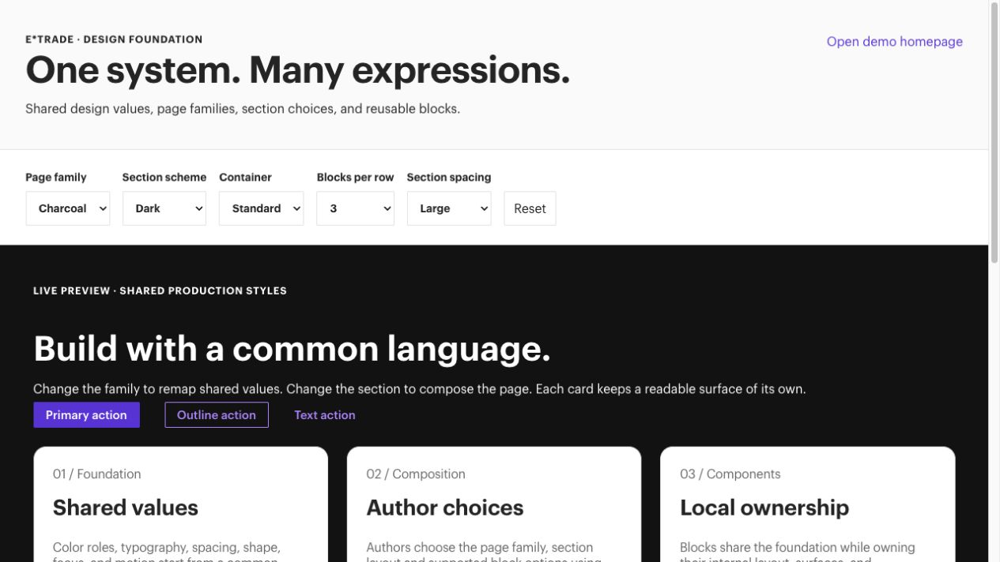

Purple
Light header by default, deep-purple inverse/campaign surfaces, light footer, smaller card corners and divided FAQ rows with right-side plus/minus controls.
Edge Delivery Services E*TRADE
A practical reference for authoring pages, managing shared content, and releasing updates to the E*TRADE demo site.
Choose a blockLook up metadataAvoid common mistakesAdobe documentation
This guide documents the demo implementation. DA setup, content approval, main deployment and live integrations have separate handoff checks.
01 / Essentials
Page content is maintained in Adobe Document Authoring (DA / Experience Workspace). Blocks, styles and integrations are maintained in GitHub. A content save, a content preview, a content publish and a code deployment are separate operations.
| What | Where | Use it for |
|---|---|---|
| Content workspace | adobedrago/etrade in DA | Pages, shared fragments, disclosure documents, sheets and library examples. |
| Demo editor | Home with ref=demo | Review authoring with this guide’s code branch. DA source content is shared across code branches. |
| Demo preview | demo · /home | Review demo code with previewed content. The guide is based on the local demo checkout. |
| Main preview | main · /home | Review code deployed to main with previewed content. Feature availability may differ from demo. |
| Main live delivery | main · live /home | Published content with main code. This address alone does not establish a production-domain cutover. |
| Code | AdobeDrago/etrade | Code Sync deploys branch code; merging to main ships main code. |
| Site configuration | tools.aem.live and DA configuration | EDS configuration and DA library/extension registrations respectively. |
| Style showroom | Interactive style system | Preview the real family tokens, section choices and article-card styles. Changes here do not save DA content. |
Adobe orientation: Experience Workspace overview · browse, copy and organize content.
Authors own wording, images and alternatives, headings, destinations, supported block options, metadata and release of content. Content and legal owners approve rates, fees, campaign dates, offer tiers, disclosures and claims. Developers own block behavior, shared design values, service adapters, identity and consent integrations, deployment and technical configuration.
Branch awareness matters. An editor ?ref=demo changes the rendering code; it does not create a separate content sandbox. Use a draft path for experiments and review shared-content changes across the pages that consume them.
03 / Essentials
Use a reviewed existing page as the starting point for a similar page, then replace its copy, images, links, metadata and legal dependencies. The repository contains page-layout conventions and a block-library pilot; it does not establish a registered set of DA starter templates.
| Page / pattern | Primary blocks | Handoff note |
|---|---|---|
/home | Hero Dark, Columns Feature, Widget Calculator, Cards Pricing, Cards Product, Cards Award, Accordion FAQ, Separator, Floating Dock | Use Charcoal for the intended design family. Campaign details and disclosure sources remain authored. |
/home/welcome-back | Welcome Hero, Cards Icon (Welcome Back) | Use Purple for the intended family. The login presentation hands off to the authored login destination. |
/platforms | Hero, Cards Platform, Banner Offer | Use Purple for the intended family. The Hero image is a full-width background. |
/planning | Hero Dark (Split), Cards Icon (Planning / Tools), Columns Feature, Banner Offer (Compact) | Preview currently loads; verify campaign and planning content before reuse. |
/why-etrade | Hero Dark (Split, Balanced), Cards Article (Promo), Carousel Story | Verify the current source table and media rather than assuming earlier content migration notes are complete. |
/what-we-offer/our-accounts | Hero Light, Tabs Accounts, Accordion FAQ | Implemented in code; this path returned 404 on demo preview during this guide’s checks. |
/what-we-offer/our-accounts/brokerage-account | Hero Product or Hero Dark (Split, Inset), Columns Feature, supporting cards/offers | The split-hero change requires an authored table migration; inspect the actual page before changing its name. |
/what-we-offer/pricing-and-rates | Cards Pricing, Accordion FAQ (Flat) | Implemented in code; this path returned 404 on demo preview during this guide’s checks. |
A starter document is copied content: future edits to the starter do not update its copies. A Fragment is shared content: changing its source affects consuming pages. A code change affects every page that uses that block or helper. The page-layout helper recognizes six existing routes, including Home, Welcome Back, Our Accounts, Brokerage, Planning and Why E*TRADE; duplicating one to a different address does not automatically carry its route-specific layout classes.
For a new page type, ask a developer to confirm its layout behavior at the new path. Do not invent Template values or new block names to imitate an existing layout.
04 / Authoring
The site applies the E*TRADE styling to the structure you author. Its primary typeface is GraphikETRADE, with the existing local font fallbacks. Choose the correct heading, list or link structure; use supported page, section and block options to select the presentation.
A link’s presentation depends on its context. Ordinary default content uses the formatting rules below; page layouts and blocks can also turn standalone links into actions.
| Author this | Result |
|---|---|
| A link within a sentence | An inline text link. |
| A plain link alone in a paragraph in ordinary default content, outside an action group | A text link. |
| A plain link alone in a paragraph in a page-level action group | Normally a primary action for the first link and secondary actions for later links. Section-specific rules can select an outline or secondary first action. |
| A bold link alone in a paragraph in ordinary default content | A primary button. Page-level action groups preserve this choice. |
| An italic link alone in a paragraph in ordinary default content | An outline button. Page-level action groups preserve this choice. |
| A bold and italic link alone in a paragraph in ordinary default content | An accent button. Page-level action groups and blocks using the shared action helper normalize it to a primary action. |
| Standalone links inside a block | Follow that block’s action rules. Some blocks honor bold/italic button formatting; others select action styles independently of that formatting. |
Page-level actions: Home, Welcome Back, Our Accounts, Brokerage, Planning and Why E*TRADE group eligible standalone links in default content after their blocks load. Pricing introductions also group standalone links, including on other routes. In these areas, removing bold or italic formatting does not guarantee a text link. Keep a link within a sentence when it should remain inline.
Block actions: Hero Dark makes the first standalone link primary and later links secondary regardless of bold/italic formatting. Hero Light defaults to an outline first action and honors formatting overrides through the shared action helper. Tabs Accounts uses text actions for Learn more and outlines for other account actions. Follow each block’s contract instead of adding decorative arrows or duplicating links.
Put the following table in the section it should configure. This example uses the Purple family inside a dark, standard-width section, with up to three whole blocks in a row.
| Section Metadata | |
|---|---|
| Theme | Purple |
| Container | standard |
| Grid | 3 |
| Gap | m |
| Spacing | l |
| Color Scheme | dark |
| Background | inverse |
| Align | center |
| Anchor | featured-products |
See all section fields, supported values and defaults in the metadata reference.
A section grid arranges whole blocks. The rows inside one Cards Article table are that block’s internal cards. Spacing: none removes section-level vertical space; it does not remove a component’s internal padding.
Sources: style system and complete section settings · shared action behavior
05 / Authoring
Theme selects a design family; Color Scheme selects a light or dark section. Purple and Charcoal are the project’s two reference treatments. Neither is an automatic operating-system dark mode.
Light header by default, deep-purple inverse/campaign surfaces, light footer, smaller card corners and divided FAQ rows with right-side plus/minus controls.
Dark header and footer, charcoal inverse surfaces, rounded cards and rounded FAQ rows with left-side chevrons.
| Metadata | |
|---|---|
| Title | Your page title |
| Description | Your page description |
| Image | Your approved social image |
| Theme | Purple |
| Header Theme | dark |
| Disclosures | /disclosures/sets/homepage |
See the complete metadata reference for all supported page and section settings. Choose a disclosure set appropriate to the page; the homepage path above is an example. Omit Header Theme when the header should follow the family. Missing or unsupported family values retain the existing mixed treatment. Legacy Theme: light or dark selects only the header scheme.
Open the style showroom, switch Page family, then Section scheme, Container and Blocks per row. The preview uses the site’s real shared styles and displays equivalent authoring metadata. On individual block-library preview pages, the floating Theme control compares Purple and Charcoal; Use page default restores the authored family. Neither control saves DA metadata.

Developers maintain palette and semantic roles in styles/brand.css, family overrides in styles/themes.css, section composition in styles/sections.css, and component layouts in their owning block stylesheets. Shared action and card rules live in styles/actions.css and styles/cards.css. Text and spacing use scalable values; narrow block containers and enlarged text reduce internal column counts.
Before rollout, set the intended family in DA, review both logo schemes in the shared nav, and review footer artwork and campaign images. The saved regression fixtures are examples, not evidence of the current DA metadata. Home should opt into Charcoal and Welcome Back into Purple; confirm the intended family for other imported pages.
Source: complete style-system guide
06 / Reference
Use Metadata for page-wide settings and Section Metadata inside the section it configures. A Rate settings cell belongs to one card, panel or answer row; it is neither kind of metadata table.
Adobe: Page Metadata · Bulk Metadata. A site can define shared defaults in a published metadata sheet; page-level values take precedence. Ask the content administrator to check any configured shared defaults when a value is unexpected. The custom fields and allowed values below are specific to this implementation.
The fields below cover the delivery metadata used in this guide and the project-specific settings read by the current code. “Omitted” describes this implementation; it does not mean an unfinished page is ready for release.
| Field | Value to supply | When omitted / review |
|---|---|---|
| Title / Description / Image | The page’s approved title, description and social-preview image. | Set these deliberately for a new page. Inspect the delivered page title, description and preview image; this guide supplies no fallback copy. |
| Theme | Purple or Charcoal. | No family is applied for a missing/unsupported value; existing mixed styling remains. Header/footer defaults are dark without a family. Legacy light/dark values affect the header scheme only. |
| Header Theme | light or dark. | Uses a block Light/Dark option, then legacy page light/dark, then the family default: Purple → light; otherwise dark. |
| Nav | A local source path such as /nav. | Loads /nav, with a compatibility attempt at /content/nav if that default cannot load. |
| Footer | A local source path such as /footer. | Loads /footer. Only its Footer block is used; an unavailable source does not generate replacement links or copy. |
| Disclosures | A local disclosure document or structured set path, such as /disclosures/sets/homepage. | No after-footer legal source is selected by this field. Select the set required by the page’s claims; do not copy the homepage value blindly. |
| Header Logo Light / Header Logo Dark | An approved image URL for the corresponding header scheme. | Uses the selected Brand image; the imported legacy logo has a bundled compatibility replacement. An override replaces that image source, not the whole Brand row. |
| Nav Link Base | An absolute HTTP(S) base URL, only when the reviewed navigation needs it. | No base rewrite. When set, root-relative navigation links other than /home resolve against this base; review their final destinations. |
| Search Action | The approved search destination URL. | Header search uses https://us.etrade.com/search. Changing this field does not add autocomplete. |
| Bank rates source | direct or aggregate. | direct uses GET; aggregate uses POST. These settings apply to configured rate bindings, not ordinary authored fees. |
| Bank rates endpoint | A verified same-origin service path, or the approved endpoint for the selected source. | Uses the real E*TRADE endpoint for that source. Bundled sample JSON is used only through an explicit test endpoint; verify host access separately. |
| Market Data Mode | live to request the live service; omit for sample mode. | Uses bundled sample data with sample notices. A failed live request stays unavailable. |
| Market Data Base | A verified same-origin proxy base ending in /, implementing the documented service paths. | Live mode uses https://us.etrade.com/phx/pros/apicontent/market/. This setting is not an arbitrary-provider adapter. |
| Market Data Sample | A permitted same-origin sample JSON path for a deliberate demo/test. | Sample mode uses /data/market-data.json. Live mode ignores this field. Test-fixture paths have additional localhost restrictions. |
Leave a field out when the reviewed page’s existing layout should continue. Explicit fields override equivalent legacy Style options; a section family does not change the page header or footer.
| Field | Supported values | When omitted / scope |
|---|---|---|
| Theme | Purple, Charcoal. Legacy light/dark values select a scheme. | Inherits the page family unless an existing section Style selects a family. |
| Container | narrow, standard, full. | Keeps the existing block/section width. Explicit narrow/standard maximums are 800px/1200px including gutters; full removes side gutters. |
| Grid | 1–6. | No authored whole-block grid is created. Explicit grids stack below 768px, use up to two columns from 768px, and the selected count from 1200px. |
| Gap / Spacing | none, xs, s, m, l, xl, xxl. | Gap uses existing layout spacing; Spacing leaves existing section spacing. They are different scales: between blocks versus padding above/below the section. |
| Color Scheme | light, dark. | Uses a legacy section scheme/Style, then the scheme inferred from a named background, otherwise existing styling. Explicit block surfaces keep their own rules. |
| Background / Background Color | default, page, subtle, inverse, inverse-raised, highlight; supported color tokens, CSS colors or gradients. | No authored background override. Background Color takes precedence over a text Background value. Use reviewed tokens rather than inventing campaign colors. |
| Background Image | An inserted image; an image in Background also works. | No section background image is added. Images are decorative in this layer; choose readable text colors and keep essential information in page content. |
| Align | left, center, right. | Keeps existing default-content alignment. This field does not realign every block’s internal layout. |
| Anchor / ID | An identifier without spaces, such as featured-products. | No new anchor. Anchor wins over ID; a leading # is removed. Use a unique value and preserve links to existing anchors. |
| Style | Existing reviewed style names only. | No new legacy style classes. Prefer the explicit fields above for new composition; a typed style name does not implement a new design. |
Keep named rate markers and their separate settings cell in the same row. Use the rates reference for mode, product, field, balance/term, override and fallback rather than adding those fields to Page Metadata.
Sources: page/header themes · section fields · header settings · market settings · bank-rate settings
07 / Authoring
Choose artwork for the actual component and surface. The display rules below come from this checkout’s styles. Preparation advice is an editorial recommendation, not an upload limit: the code does not impose one universal image size or file-weight requirement.
| Component | Implemented display | Prepare and check |
|---|---|---|
| Hero Dark, including Split | Images fill their media column at their natural proportions; no fixed image crop ratio. The default MP4 player uses 25:14 and its media is hidden at widths up to 768px. Split is image-only. | Use a reviewed landscape source for the chosen layout. Keep captions with media and essential campaign information in text; check both a full-width and a split preview. |
| Hero Product | Images use a 680:376 display ratio with cover cropping. | Prefer a source near that ratio. Keep the subject away from edges and inspect the crop on phones and desktop. |
| Hero | Background fills the component with cover cropping anchored at the top left; no fixed image ratio. | Use artwork composed for copy over the image. Protect the copy area and check the phone crop; the block does not create the purple treatment inside an image. |
| Welcome Hero | One centered, cover-cropped background spans campaign and login. Phone layout puts login before campaign. | Choose a background that tolerates a changing component height. Keep text/logos out of areas the login panel or crop can cover. |
| Cards | Images use a 4:3 cover crop. | Prefer 4:3 source artwork and keep the subject clear of crop edges. Check each image after the grid reflows; media is optional. |
| Cards Article | Default images use a 16:9 cover crop. Promo artwork fills the card behind its content and may crop as the card grows. | Use consistent source proportions within a group. For Promo, leave space for the content surface and test long copy; 16:9 is not a guarantee that all artwork stays visible. |
| Cards Platform, Carousel Story, Columns Feature | Media generally keeps natural proportions and scales to available width. Award limits Columns Feature media separately. | Use consistent proportions across related cards. Check the selected variant and reading order; Columns Feature (Media First) changes the phone order. |
| Cards Award | Artwork occupies a 4.5rem square (72px at the default text size). | Prepare square artwork with breathing room to avoid distortion. Use empty alt text only when adjacent copy already communicates the artwork’s information. |
| Banner Offer | Media is hidden below 768px. Compact uses a square cover-cropped thumbnail on desktop. | Keep all offer details in the copy. Use a square source for Compact and check the banner without its image. |
| Header / Footer | Authored logos retain their colors. Header selects a Light/Dark Brand source; the page family controls the footer surface. | Use approved artwork for each surface and preserve its proportions. Check both schemes; custom logo colors are not automatically recolored. |
Adobe: add media to a document or select from AEM Assets · current delivery and media limits. AEM Assets selection requires its configured integration. Use the component rules above for E*TRADE’s actual image crops.
Check the result: preview on phone and desktop, check the crop and surrounding text, enlarge text to 200%, and follow any image link with the keyboard. The final rendered crop is the acceptance check.
Sources: Hero cropping · product image ratio · article/Promo artwork · banner media · individual block contracts
09 / Authoring
?ref=demo before the URL’s #..aem.page address on the intended code branch.For a campaign change, treat the headline, amount, deadline, promo code, calculator tiers, rate source, CTA destinations and corresponding legal copy as one content update. A screenshot or saved example is not the approval source for current offer terms.
If a change appears only in the editor, check the save and preview steps, the path and the code branch. A code merge does not publish edited DA content.
For reviewing an edit, see Adobe’s version comparison and restore workflow. Compare the selected version with the current page before restoring: restoration replaces current source content. Then review the restored result and follow the preview/publish workflow for the intended release.
Use this checklist for a new page; the shorter workflow above is for changing an existing one. Treat a copied page as a starting point whose inherited settings must be reviewed.
?ref=demo changes rendering code rather than creating a content sandbox. Preview dependencies as well as the page.Done means: the intended published URL is reachable through its real entry links, shows the approved content and metadata, and loads the correct shared and legal sources. A saved draft or working demo preview alone does not meet that check.
11 / Authoring
The global header loads /nav; the footer loads /footer. Page metadata Nav and Footer can select other local fragments. Links to /fragments/ paths can be expanded automatically; an explicit Fragment block also loads shared content. Preview/publish a changed source and review every consuming page.
Adobe’s Fragments guide explains reuse and the separate source lifecycle. For this project, follow the local-path reference format and disclosure-set contracts below; Adobe’s generic examples do not define this site’s legal schema.
Page Metadata Disclosures selects legal content that is rendered after the global footer. It accepts a rich-text disclosure document, a document containing a Disclosures table, or a structured disclosure-set. Keep legal content separate from the Footer block.
A structured set at /disclosures/sets/homepage selects individual rich-text fragments. Each numbered item has a permanent disclosureId; its position in the set determines its displayed number. IDs begin with a lowercase letter and contain lowercase letters or digits, such as offer or disc1.
Claim text with superscript: offer
Two references in one superscript: fees,offerApply superscript formatting to the ID text in DA. When matching footer items are available, offer becomes a numbered link to #disclosure-offer. Reordering the set updates the displayed number and keeps that stable anchor. Introductory/closing fragments do not consume numbers. Legacy numeric and letter markers remain supported for legacy numeric sources; migrate those markers deliberately when changing to stable IDs.
The Audit reads saved page content. References inside separately loaded fragments are outside that audit. If a set or referenced fragment cannot load, the legal region is hidden and a loading error is logged; no partial legal footer or substitute copy is generated. Verify the complete footer on the rendered page.
Sources: disclosure formats and reference contract · Disclosure Manager
12 / Authoring
Cards Product, Cards Account, Cards Pricing, Tabs Accounts and Accordion FAQ support selected numeric rate markers. Keep the %, APY wording, dates, promotional terms and disclosures in authored content. A standard balance-tier rate is not a boosted promotional APY.
In a card or FAQ answer use {{rate:base}}% APY. Add a separate cell in the same row; its first paragraph is Rate settings, followed by one setting per paragraph:
Rate settings
Name: base
Mode: api
Product: 3100
Field: advertisedAPY
Balance: 0
Fallback: -.--| Setting | Choices / meaning |
|---|---|
| Mode | api requests the selected rate; manual uses numeric Override; hybrid uses a populated Override before requesting a rate. Zero is valid. |
| Product | 3100 savings; 4240 checking; 3500 CDs. |
| Name | Matches a named marker in the same row, such as base for {{rate:base}}. Omitted Name defaults to rate for {{rate}}. |
| Field: savings/checking | advertisedAPY, disclosureAPY or finalRate, with an explicit numeric Balance. Do not add Term. |
| Field: CDs | For a Term such as 12M, use disclosureAPY or finalRate. For a range endpoint use minDisclosureAPY or maxDisclosureAPY and omit both Balance and Term. CDs do not accept advertisedAPY. |
| Override | A numeric value, required in manual mode. Hybrid uses a populated valid Override before requesting a rate; an omitted Override allows the configured API request. Zero is valid. |
| Bank rates source | Page metadata: direct (default GET) or aggregate (POST). |
| Bank rates endpoint | Optional page metadata for a verified same-origin route; otherwise the approved real E*TRADE endpoint is requested. |
| Fallback | An approved numeric value or the literal -.-- placeholder. Other text invalidates the settings and prevents the rate request. If omitted, an unresolved rate uses an unavailable em dash; a missing rate is not evidence of a zero rate. |
The bundled JSON under /phx/pros/ is sample data and is selected only through an explicit endpoint. Verify real endpoint access from the delivery host before using API mode for delivery. Demo balance controls change only supported preview/local bindings; they do not read a customer account.
Market Ticker, Market Overview and Market Top Five default to /data/market-data.json and display sample-data notices. Page Metadata Market Data Mode: live selects the real-service contract; Market Data Base can select a verified same-origin proxy implementing the same paths. In live mode, a failed service remains unavailable rather than switching to sample prices.
Before live delivery, verify browser access, quote timestamps, the Treasury scaling and Top Five’s quote/chart alignment against actual service responses. Author the stock, mutual-fund and ETF disclaimers. A configuration switch alone does not establish those integrations are ready.
Sources: rate settings · market service contract · login boundary · tracking contract
13 / Operations
| Change | Where to make it | Review scope |
|---|---|---|
| Site navigation or footer | The shared /nav or /footer document, unless a page overrides its source. | Every consuming page, both header schemes, desktop menus and the mobile drawer. |
| Shared promotional content | The source Fragment when pages use a reference. | All consuming pages and their surrounding section schemes. |
| Disclosure wording/order | The legal fragment / structured set. | All sets/pages using that fragment; complete legal footer and each claim marker. |
| Repeated content copied into pages | A scoped set of page edits. | Every copy. Updating one page or a starter does not update the others. |
| Design values or block layout | Code owned by a developer. | All affected blocks, families, variants, containers and enlarged text. |
| A link on selected page paths | Link Options route rule when one shared text link needs a default and alternate. | Matching and nonmatching paths, including links rendered from fragments. |
For a bulk content update, first list the exact pages and dependencies, make one representative draft, and review its differences. Preserve IDs, query parameters, rate settings and approved terms unless the change explicitly includes them. Preview a small batch before applying the same transformation to the remaining pages.
Collect the page URLs, open Apps → Bulk, paste the list and choose the required action. Preview, Publish, Version and Index are available operations; inspect the success and error results. A bulk preview/publish processes existing saved content—it does not rewrite every page’s wording. Use Version labels to identify a release checkpoint.
Publish dependencies before the pages that require them: disclosure fragments and sets, shared fragments and target pages, then pages/navigation that reference them. Revisit dependency failures before treating the batch as complete.
14 / Operations
If enabled for the site, the Experience Workspace assistant can help with scoped content changes. Give it the exact page, the target block, replacement wording and things to preserve. Review the resulting content and preview before release. This guide does not establish that the assistant is enabled in this DA tenant.
Supply approved financial/offer copy rather than asking the assistant to invent rates, eligibility, dates or legal terms. Compare the edited source and rendered result; use the editor’s history/version tools when reverting an unwanted change.
15 / Operations
For a new page or a structural change, provide a reviewed source page or native block example, exact destination and supported table names. Treat content creation, catalog registration and code implementation as separate tasks.
Developer-side agents can change code when a new behavior is required. They must inspect delivered plain markup and the existing auto-block pipeline, preserve scripts/aem.js, scope styles to the owning block, and validate the branch preview. Adding a table name in DA does not implement a new block.
16 / Operations
| Component / capability | Author-controlled input | Implementation boundary |
|---|---|---|
| Welcome Hero | Campaign, image, login destination and help links. | Presentation and navigation; identity requires a separate integration. |
| Widget Calculator | Funding/credit tiers, labels, campaign copy, promo code and disclaimer. | Local calculation from authored tiers; legacy empty credits may use a dated snapshot. Author all current tiers. |
| Market blocks | Labels, category selection, disclaimers and page data-mode metadata. | Sample data by default; live service contracts require browser verification. |
| Dynamic bank rates | Named markers, selection settings, overrides and fallbacks. | Approved API/same-origin contract; no automatic sample-data fallback. |
| Separator | Two surfaces, step position, height and optional line. | Decorative divider. Match neighboring section backgrounds separately. |
| Floating Dock | Offer, login and primary links. | Public account shortcuts; it does not infer signed-in state. |
| Widget loader | A link to an implemented widget asset. | Developer extension point. No widget asset directory is currently present; it is not an arbitrary embed tool. |
On localhost and the exact demo/demo-controller preview hosts, Demo controls exposes Page tools, Performance and Tracking. Page tools can set a dummy rate-test balance. Performance compares an unloaded baseline with simulated third-party payloads, optional assumed processing work or the explicitly selected real OneTrust SDK. Tracking exposes sample and real page-event queues separately.
These controls are for demonstration. Payload emulation does not reproduce vendor behavior or prove production performance; a local sample receiver does not establish Adobe/CJA ingestion. The controls are absent on ordinary live hosts. Screenshots in this guide may include the preview-only launcher.
17 / Reference
Table structures and supported options for the 32 blocks in the demo implementation. Search by name, use or option, or choose a block family.
Each entry covers purpose, required and optional content, defaults, supported variants, a common mistake and a rendered-result check. Required content describes what produces a useful component; most decorators tolerate omitted cells. Where the code needs a specific input, such as a Widget source link or a complete FAQ row, the entry says so. Examples describe structure rather than approved campaign copy.
32 blocks
Examples describe structure; use approved copy and assets. DA registration and published usage require separate handoff checks. Follow each authoring contract for optional rows and cells, especially for Columns and Widget.
Try a different name or choose another family.
Purpose: Dark campaign hero with authored copy, actions and media. The default places heading and supporting copy above full-width media.
| Hero Dark |
|---|
| Image with alternative text |
| Heading 1 and supporting paragraphs |
| Standalone primary link |
| Standalone secondary link |
Supported variants: Default; Split; Split, Balanced; Split, Inset.
The first heading/image identify the title/media; optional content can be omitted. Split also accepts named Eyebrow, Heading, Content, Image and Offer rows in any order. Balanced uses equal desktop columns; Inset adds desktop text padding. Keep captions with the media. Split supports images; the default retains its MP4 controls.
Common mistake: Renaming a background Hero without restructuring its content, or assuming Split supports MP4.
Check the result: Check reading order, every action, caption placement, and the intended default/Split layout on phone and desktop.
Purpose: Text-only introduction, including the Our Accounts pattern.
| Hero Light |
|---|
| Heading 1 |
| Supporting rich-text copy |
| Standalone link |
Supported variants: No additional named option documented.
Content is combined in authored order. The first standalone link defaults to an outline action; later ones are secondary. It does not supply an image layout. Preserve superscripts and inline links.
Common mistake: Adding an image expecting a media layout, or using heading size instead of the correct heading level.
Check the result: Confirm the page title, readable copy, expected action treatment and one page H1.
Purpose: Dark product hero with separate text/media and an optional offer.
| Hero Product | |
|---|---|
| Eyebrow | Optional eyebrow |
| Heading | Heading 1 or 2 appropriate to the page |
| Content | Copy and standalone CTA paragraphs |
| Image | Image with alternative text |
| Offer | Optional heading, terms and standalone link |
Supported variants: Named rows; no additional named option documented.
Named rows can be reordered or omitted; extra value cells combine. Legacy unlabelled content remains supported. Moving a page to Hero Dark (Split, Inset) requires a deliberate authored table change.
Common mistake: Treating a change to Hero Dark (Split, Inset) as an automatic content migration.
Check the result: Check named-row mapping, the product image crop, action destinations and offer/disclosure placement.
Purpose: Full-width background-image hero used by Platforms.
| Hero | |
|---|---|
| Heading 1, optional Heading 2, body and standalone CTA | Background image with appropriate alternative text |
Supported variants: Default; Wide for the Investment Choices pattern.
Separate image/copy rows and named Eyebrow, Heading, Content and Image rows also work. Media is a background rather than a separate desktop column. A missing image leaves a purple surface. Use actual approved artwork; the block does not create the image treatment.
Common mistake: Expecting a side-by-side image or assuming the block generates the background artwork.
Check the result: Inspect the crop and copy contrast at both sizes, plus preserved heading levels and links.
Purpose: Campaign with a separate public login presentation.
| Welcome Hero | |
|---|---|
| Login | Heading, standalone Log on link and help/recovery/security links |
| Campaign | Heading, paragraphs and standalone campaign links |
| Image | Background image |
Supported variants: Named Login, Campaign and Image rows.
Desktop campaign sits left and login right; phone layout puts login first. The authored Log on destination receives a navigation handoff. Entered credentials are cleared, not sent or stored; remember, destination and security-code choices need a separate identity integration.
Common mistake: Treating the displayed form as a completed identity integration.
Check the result: Follow the authored login destination, inspect both reading orders and verify the campaign remains complete without its image.
Purpose: General card grid with optional images.
| Cards | |
|---|---|
| Optional image | Heading, rich copy and links |
| Optional image | Next card content |
Supported variants: No additional named option documented.
One nonempty row creates one card. Additional content cells preserve reading order; an empty block is hidden. Nested lists retain their list semantics. The internal grid responds to available width.
Common mistake: Using rows as separate fields for a single card, rather than one complete row per card.
Check the result: Count rendered cards against nonempty rows and check media alternatives, reading order and links.
Purpose: Account cards with an accent bar and authored actions.
| Cards Account |
|---|
| Heading 3: account name; description; standalone CTA paragraph(s) |
Supported variants: No additional named option documented.
One row per card, without an image requirement. Additional cells combine; blank rows are skipped. Supports the shared dynamic-rate marker/settings contract. The default first action is an outline.
Common mistake: Placing a named rate’s settings in a different account row.
Check the result: Check account titles, rate labels/disclosures and the final outlined/text action destinations.
Purpose: Article or campaign cards with optional eyebrows.
| Cards Article | |
|---|---|
| Image | Optional eyebrow paragraph, Heading 3, copy, standalone link |
| Image | Another complete card |
Supported variants: Default; Promo.
One row per card. Promo uses full-width artwork and smaller headings. Default cards use inset images. Keep body links inline and actions in separate paragraphs. Internal columns reduce in narrow containers.
Common mistake: Splitting an article across rows or assuming Promo artwork keeps the default crop.
Check the result: Check each complete article, eyebrow placement, artwork crop and independent inline/action links.
Purpose: Awards with attribution and legal references.
| Cards Award | |
|---|---|
| Optional image or :award: icon | Heading 3, description, disclosure ID and attribution |
Supported variants: No additional named option documented.
No award name, year, logo or attribution is generated. The homepage trophy can be decorative because adjacent copy names the award. Informative artwork needs meaningful alternative text. Up to three desktop columns when space permits.
Common mistake: Omitting a year or attribution because it appeared in a screenshot rather than in the table.
Check the result: Verify the full approved claim and reference; check square artwork and whether its alternative text adds information.
Purpose: Audience, life-event and tool cards using editor-safe icon names.
| Cards Icon | |
|---|---|
| book | Heading 3, description, standalone link |
| goal | Another card |
Supported variants: Default; Welcome Back; Planning; Tools.
Default names include book, computer, goal, savings, tool-box-welcome-kit and umbrella. Planning uses home-lending, group-family, graduation-gift, retirement and mountain; an offer row creates its campaign card. Tools uses ira-selector, money-automatic-investing, calculator and add-funds. Images/icons are also supported. Use the names appropriate to the selected variant.
Common mistake: Using an icon name from another variant or pasting an empty icon-font element into DA.
Check the result: Check every icon, variant-specific column treatment, campaign row and action label at narrow widths.
Purpose: Numbered reasons or benefits.
| Cards Numbered |
|---|
| Heading 3, description, standalone link |
| Heading 3, description, standalone link |
Supported variants: No additional named option documented.
One row per reason. Ordinals come from nonempty row order, so reordering renumbers the cards. The semantic ordered list stacks on phones and uses up to three columns when space permits.
Common mistake: Typing manual ordinal numbers into the heading and duplicating the generated number.
Check the result: Reorder a draft row and confirm the displayed sequence and its associated copy remain correct.
Purpose: Platform or investment-choice cards.
| Cards Platform | |
|---|---|
| Image | Heading 3, description, standalone Learn more link |
Supported variants: Default; Compact.
Compact uses full-width images, smaller left-aligned copy and a text action for Investment Choices. A single CTA can stretch across a card while inline links remain independently usable. Keep the larger ordinary variant for Platforms.
Common mistake: Using Compact for the larger Platforms treatment or accidentally linking the wrong card destination.
Check the result: Check artwork, card/action focus, final destinations and independent inline links.
Purpose: Pricing values and optional promotional cards.
| Cards Pricing |
|---|
| First paragraph: approved amount; Heading 3: label; supporting copy; standalone link |
Supported variants: Default; Text Links; Band.
Put the amount first; an offer row may start with a heading instead. Default actions are outlines. Text Links uses arrow text actions. Band is the blue Investment Choices summary and uses an H2 immediately before the table. Supports bank-rate settings where explicitly configured; bank rates do not supply commissions.
Common mistake: Moving the amount after supporting copy or expecting bank-rate data to supply commissions.
Check the result: Compare every amount, unit, category, fee qualifier and disclosure with approved content.
Purpose: Product cards with optional APY display.
| Cards Product | |
|---|---|
| Heading 3: product; optional Heading 4: rate; copy; standalone link | Optional separate Rate settings cell |
Supported variants: Default; Three Columns.
Ordinary cards cap at two desktop columns; Three Columns caps at three when space permits. Keep units, promotional terms and disclosure IDs authored. A rate marker must have its matching settings in the same row. Fixed promotional APYs must not be substituted with base-tier rates.
Common mistake: Replacing a promotional APY with a standard tier rate or losing its units/disclosure.
Check the result: Check the intended product/rate hierarchy, configured data state and approved surrounding terms.
Purpose: Image and copy feature with actions.
| Columns Feature | |
|---|---|
| Image | Optional eyebrow, Heading 2, paragraphs, standalone CTA links |
Supported variants: Light, Dark, Image Right, Media First, Outline, Band, Award; use combinations supported by the source example.
Default mobile reading order is copy then image. Media First retains media before copy on phones. Explicit Light/Dark selects the component surface; otherwise it follows the section scheme. Outline changes the first action, and Award limits recognition artwork. Preserve image alternatives and inline links.
Common mistake: Using Image Right expecting phone media order to change; Media First controls that order.
Check the result: Check desktop placement, phone reading order, chosen surface, image alternatives and actions.
Purpose: Simple columns of authored default content.
| Columns | |
|---|---|
| First column content | Second column content |
Supported variants: Column count comes from the first authored row.
The block styles image-only columns and stacks columns in narrow containers. Use Columns Feature when the layout requires its specific image/copy/action treatment. Do not use an empty Columns table merely as a spacer.
Common mistake: Adding empty columns to create spacing or assuming the decorator combines multiple rows like a card grid.
Check the result: Check each row’s cell count, image-only cells and the reading order after stacking.
Purpose: Campaign band with optional image and actions.
| Banner Offer | |
|---|---|
| Optional image | Heading, terms, promo code and standalone CTA paragraphs |
Supported variants: Default; Light; Compact. Centering is also inferred for a dark offer with one CTA and no media.
Cells combine and blank rows are skipped. Light is the compact homepage treatment; Compact retains a dark treatment for Planning. Images are omitted on phones. Keep campaign wording and inline legal links authored.
Common mistake: Putting offer terms only in artwork that disappears on phones.
Check the result: Check the offer without media, all dates/codes/disclosures, and both action destinations.
Purpose: Scrollable timeline or story cards.
| Carousel Story | |
|---|---|
| Image | Year paragraph, heading, description, optional standalone link |
| Image | Next story |
Supported variants: No additional named option documented.
One row per story. Two visible cards on desktop and one in narrow layouts. Previous/Next, dots and keyboard Left/Right, Home/End control native scrolling. There is no automatic advance; reduced-motion preferences disable animated scrolling.
Common mistake: Expecting autoplay or using separate rows for the image and copy of the same story.
Check the result: Use Previous/Next, dots and keyboard arrows/Home/End; verify story order and native links.
Purpose: Account categories with tabbed panels and account lists.
| Tabs Accounts | ||
|---|---|---|
| Category label | Heading 2, introduction, list of accounts (each with Heading 3, description and standalone actions) | Optional content or Rate settings |
Supported variants: No additional named option documented.
Use the plural name. Desktop tabs become a category select in narrow layouts. Learn more is a text action; application actions are outlines. Keep panel-specific rate settings with their markers. Category/account counts belong to the particular page; do not substitute the Investment Choices snapshot for Our Accounts.
Common mistake: Copying category counts from another page, or placing multiple named rate settings outside their panel row.
Check the result: Switch every category with keyboard and phone select; verify account content, action styles and rate/disclosure mapping.
Purpose: Question-and-answer rows with rich answers.
| Accordion FAQ | ||
|---|---|---|
| Question text | Complete rich-text answer | |
| Next question | Answer with optional native fee table | Optional separate Rate settings |
Supported variants: Default follows family; Flat forces divided rows; Pricing is a legacy alias for Flat.
Place the section H2 immediately before the block, with an optional standalone FAQ link immediately after it. Questions are plain text; answers preserve rich text and tables. Individual opening closes other answers; Expand all/Collapse all remains available. In section grids, the section introduction remains outside the block. Missing questions/answers are skipped.
Common mistake: Putting fee-table headings in new block rows or leaving the primary answer blank.
Check the result: Open each answer and Expand all; check keyboard access, native table headers, rates and complete legal copy.
Purpose: Local funding-threshold and cash-credit calculator.
| Widget Calculator | |
|---|---|
| Heading | Approved campaign heading |
| Description | Eligibility and funding requirements |
| Primary CTA | Authored standalone link |
| Disclaimer | Approved disclosure |
| $1,000 | $50 |
| $5,000 | $150 |
Supported variants: Named promo/label rows and numeric funding/credit rows; no named variant.
Amounts above are illustrative. Author all current tiers and campaign terms. Extra supported rows include Promo code, Secondary CTA, Funding label, Credit label and Select label. Numeric tiers sort by funding; explicit zero credit is valid. A desktop slider and phone dropdown select the same range. Legacy empty-credit fallback values are a dated snapshot.
Common mistake: Leaving credit cells blank for a new offer or treating illustrative tiers as approved campaign amounts.
Check the result: Check every tier, explicit zero credits, highest + range, control labels and matching campaign terms.
Purpose: DOW, NASDAQ, S&P and 10-year Treasury quotes.
| Market Ticker | |
|---|---|
| Label | Market indices |
Supported variants: Optional label row; data mode is page metadata.
Defaults to bundled sample data with visible notices. Live mode uses the configured quote service and keeps unavailable values unavailable. Direction includes signed text rather than relying on color. Confirm timestamps and Treasury scaling before live delivery.
Common mistake: Removing sample notices or switching to live without checking the actual service response.
Check the result: Check mode notices, quote timestamps, signed changes and Refresh/unavailable behavior.
Purpose: Index chart, quote lookup and recently searched symbols.
| Market Overview | |
|---|---|
| Heading | Market overview |
| Search label | Get quotes |
Supported variants: Optional named rows; data mode is page metadata.
Four index tabs, keyboard point inspection and a complete observation table support chart access. Suggestions and valid symbols navigate to existing E*TRADE quote pages. Recent symbols persist in the tab’s session. Sample data is the default; live access and response contracts need verification.
Common mistake: Assuming sample charts establish a live feed or that symbol search supplies site-wide autocomplete.
Check the result: Switch indices, inspect points/table with the keyboard, try a valid quote destination and review unavailable states.
Purpose: Selectable delayed stocks, mutual funds and ETFs.
| Market Top Five | |
|---|---|
| Heading | Top five |
| Default | TopDivYieldStocks |
| TopDivYieldStocks disclaimer | Approved stock disclosure |
| MostSearchedMFs disclaimer | Approved mutual-fund disclosure |
| TopETFs disclaimer | Approved ETF disclosure |
Supported variants: Category keys: TopDivYieldStocks, MostSearchedMFs, TopETFs; each also accepts a label row.
Keep all three disclaimers authored. At most five unique valid quotes display, with chart/unavailable states. Bundled samples are the default. Live quote/chart positional alignment needs verification; no synthetic production fallback is supplied.
Common mistake: Approving a single category while the other category disclosures are missing.
Check the result: Review stocks, mutual funds and ETFs separately, including disclaimers, timestamps, quote links and chart alignment.
Purpose: Decorative stepped divider between section surfaces.
| Separator | |
|---|---|
| First section color | dark |
| Second section color | light |
| Line break location | 50% |
| Height | 81px |
| Mobile height | 45px |
Supported variants: Optional Line color; settings may be omitted or reordered.
Put the table in its own section, with a break before and after it. Match the neighboring section backgrounds separately. Line break values are clamped to 0–100%; valid heights are positive. The SVG is decorative and has no interaction. Light/Dark shortcuts use the shared surface roles; explicit colors remain available.
Common mistake: Expecting its surface settings to recolor neighboring sections.
Check the result: Check the divider bounds, both neighboring section backgrounds and the step position at phone/desktop sizes.
Purpose: Floating public account shortcuts.
| Floating Dock | |
|---|---|
| offer | Limited-time-offer link |
| login | Log on link |
| primary | Open an account link |
Supported variants: Named offer, login and primary rows.
Keep the destinations and campaign parameters authored. The imported homepage’s legacy sticky-CTA paragraphs can also auto-build this block. Avoid adding a second dock to a page that already auto-builds one. It is not an authenticated account menu.
Common mistake: Duplicating the dock or using an unlabeled icon link that is skipped.
Check the result: Check destinations, phone disclosure/Escape behavior and that focused page links remain clear of the fixed dock.
Purpose: Loads a shared local content document.
/fragments/example, as a link or text.| Fragment |
|---|
| Single link to /fragments/your-reviewed-source |
Supported variants: No additional named option.
Use a local document path. Changes to the source affect every consumer. A fragment alone in a section can supply its own sections; alongside other content its wrappers are flattened into the section. Reusable Content provides the picker workflow. Preview/publish the source separately.
Common mistake: Copying rendered markup instead of a reference, or using an external URL rather than a local path.
Check the result: Preview the source and every consumer; check surrounding sections and repeated content after the source changes.
Purpose: Global navigation from the shared /nav document.
| Header |
|---|
| Configured by four sections in /nav, rather than a generic page-content row. |
Supported variants: Page Header Theme; explicit Light/Dark Header options; page Nav override.
Keep four ordered sections: utility links, Brand variants, main navigation, account action. Preserve empty sections for omitted roles. Brand uses Light/Dark linked-image variants; nested navigation lists can use Column and Promo markers. Mobile drawer, search, keyboard focus and public login handoff are implemented. Shared nav content still needs its documented migration/verification.
Common mistake: Omitting an empty source section and shifting Brand/navigation into the wrong role.
Check the result: Check both logo schemes, desktop menus, mobile drawer, search destination and account action with keyboard focus.
Purpose: Contact, social and navigation content from /footer.
| Footer | |
|---|---|
| Contact | Heading 2 and a telephone link |
| Social | List of labelled social links with optional icons |
| Column | Heading 3 and navigation list |
| Brand | Optional linked logo image |
Supported variants: Repeat Column rows; page Footer metadata can choose another source.
Only the Footer block inside its source is rendered. Legal copy is a separate Disclosures source. Contact, Social, Column and Brand rows can be omitted/reordered. Supply accessible labels; unlabeled icon-only social links are omitted. Custom artwork must suit the page-family surface.
Common mistake: Putting disclosure copy outside Footer expecting the footer loader to include it, or omitting social link labels.
Check the result: Check every contact/social/navigation destination and accessible name; review legal content separately after the footer.
Purpose: Legal region and automatically linked claim markers.
| Disclosures | |
|---|---|
| Introduction | Approved introductory rich text |
| 1 | Legacy numbered disclosure copy |
| Closing | Approved closing copy |
Supported variants: Inline legacy table; single document-link cell; page Disclosures metadata; structured stable-ID set.
The example shows the legacy numeric table format. Prefer an existing stable-ID set for Disclosure Manager. Keep permanent IDs, legal wording and all dependencies. Do not define duplicate entries with both inline content and page metadata. Failed referenced sources hide the region and log an error.
Common mistake: Mixing inline and metadata definitions or replacing permanent IDs with displayed numbers.
Check the result: Follow every claim marker, check set order and back-links, and confirm the entire legal region is present.
Purpose: Collapsed author guidance in block-library preview documents.
| Library Metadata (Guide) | |
|---|---|
| Title | Authoring guide |
| Description | Structure, properties & options |
| Table structure | Documentation in ordinary rich text |
| Supported options | Reviewed list of implemented options |
Supported variants: Author the table heading as Library Metadata (Guide).
This is documentation rather than a page component to insert. The preview helper converts that heading to Library Brief; native pickers exclude Library Metadata tables. Keep example block tables outside the guide and in their own sections. Older Library Brief source headings require migration.
Common mistake: Inserting guide metadata as a customer-page component or placing real example tables inside the guide.
Check the result: Check the gallery guide opens and the native picker lists actual examples rather than the authoring guide.
Purpose: Loads an implemented widget from /widgets/ assets.
| Widget |
|---|
| A single link to /widgets/{implemented-name}.html |
Supported variants: Widget link query parameters provide data attributes.
The loader expects matching HTML, CSS and JavaScript at the widget asset path. No widgets directory is currently present in this checkout. Use the dedicated Widget Calculator block for the funding calculator; do not invent a widget URL or paste an arbitrary external embed.
Common mistake: Treating a Widget table as an arbitrary external embed or deleting its required source link.
Check the result: Have the developer verify the asset contract and loading before authors use it; a table name alone cannot create a widget.
18 / Reference
Preview updates the preview instance; Preview & Publish updates both preview and published content. The AEM Sidekick also exposes actions on rendered pages according to permissions and page state. See Adobe’s publishing guide for the current UI.
Adobe also documents Preflight for automated checks before release. Where available, review its findings alongside the manual page, data and legal checks above; this guide does not establish this tenant’s Preflight configuration.
https://{branch}--etrade--adobedrago.aem.page/home. A local screenshot does not replace branch review.demo preview does not establish that main or the public E*TRADE domain has the same code/content.Use the editor’s Prepare → Unpublish flow when removal is intended. It removes preview and published delivery. Review incoming navigation links and any redirect requirement with the site owner before removing a page from an active journey.
19 / Reference
These items are based on repository contracts and the limited URL checks performed for this guide on October 29, 2026. DA configuration, native editor integration, production-domain routing and live-service access were not audited.
| Item | Evidence / impact | Next check | Owner |
|---|---|---|---|
| Code promotion | The guide describes demo at 6cac224, not a verified main release. | Compare/promote the required code and review the branch preview before enabling dependent content. | Developer |
| Our Accounts and Pricing preview paths | Both documented /what-we-offer/... paths returned HTTP 404 through the demo content preview. | Confirm the intended DA paths, preview the documents and recheck their navigation links. | Lead author |
| Block library registration | Two pilot preview documents load; source tables and tests are prepared. | Check the Blocks catalog and insert all six pilot examples through DA; verify editing, save/reload and undo. | Lead author / developer |
| Library guide migration | Library Metadata (Guide) prevents author guidance from becoming an insertable example. | Rename older Library Brief source headings and remove only obsolete naming metadata; review picker results. | Lead author |
| Page-family rollout | Code supports Purple/Charcoal; saved fixtures do not establish current DA family selection. | Set intended page families and review header logos, footer artwork and explicit overrides. | Design / author |
| Navigation source migration | Header documentation retains a compatibility path for the imported flat-list source. | Review current /nav, migrate explicit roles/columns/promos and both logo schemes, then remove fallback only after verification. | Author / developer |
| Detailed Pricing content | Repository notes identify incomplete historical preview categories/tables and missing rate settings. | Once the page is restored, reconcile approved fee tables, categories, rate bindings and disclosure IDs. | Content / legal |
| Campaign and rate consistency | The current Home preview contains authored campaign dates and rate/legal fragments with their own values. | Review each displayed claim, selected rate source and corresponding legal terms together; obtain current approved values. | Content / legal |
| Live market and rate access | Clients implement approved service contracts; bundled samples do not verify live access. | Verify host access, timestamps, tier/term selection and Top Five chart alignment with actual responses. | Integration developer |
| Login / search / analytics | Login is a handoff, header autocomplete is absent, and tracking has no production sender. | Define and test identity, search and consent-aware analytics integrations before relying on them in production. | Integration developer |
| DA extensions | Registration rows are documented; standalone tools/tests do not prove enabled DA configuration. | Verify Link Options, Disclosure Manager, Reusable Content and Import & Export in the authenticated editor. | DA administrator |
| Shared-content/legal review | The Home source includes a disclosure-fragment reference before its hero; its intended placement needs review. | Confirm that page body references and the after-footer disclosure source produce the intended content without stray or duplicated copy. | Author / legal |
Preview availability checks succeeded for Home, Welcome Back, Platforms, Planning, Why E*TRADE, the Hero Dark and Cards Article library documents, and the style showroom. This confirms page availability only, not content approval, completeness or native DA insertion.
20 / Reference
| Symptom | Author check | Developer / admin check |
|---|---|---|
| Block appears unstyled | Exact block name and supported parentheses/options; correct preview branch. | Block files exist on the selected branch; check loading errors. |
| Missing or misplaced card content | Complete row per card; image/copy cell order; CTA in its own paragraph. | Compare delivered plain markup with the decorator’s contract. |
| Correct in editor, stale on preview/live | Save, preview/publish, exact path, branch and shared dependencies. | Delivery response and content status for the failing path. |
| Page returns 404 | Document’s actual DA path and preview status. | Content mapping, path routing and branch environment. |
| Theme looks inconsistent | Theme family versus Color Scheme; explicit block/header options; suitable artwork. | Semantic role inheritance and component-owned surfaces. |
| Rate is a marker or unavailable | Marker name and separate settings cell in the same row; product, field and balance/term. | Approved endpoint response/browser access; do not silently replace with sample rates. |
| Claim marker remains letters or IDs | Matching ID in the rendered set; preview the set and every fragment. | Failed disclosure source; mixed legacy-number/stable-ID schema. |
| No legal footer | Disclosures metadata and published/previewed dependencies; avoid duplicate definitions. | Set/fragment request errors; failure intentionally hides the region. |
| Extension is missing | Correct Outline → Extensions / classic Library entry and editor ref. | Saved library registration, plugin URL branch, inline experience and ref visibility. |
| Tracked click is Ready, not Sent | Tracking key/categories and actual category consent. | A real sender/Adobe integration must be connected. Demo sample consent does not grant real consent. |
| Assistant made an unwanted change | Review history/version recovery, narrow the scope and supply the exact supported structure. | Correct recurring guidance or implement behavior missing from code. |
For a toolbar failure, match the displayed message with Adobe’s Sidekick error reference. For an unwanted source edit, use the version history and restoration guide.
21 / Reference
This is a static HTML guide with a small catalog filter. It does not load the customer page scripts. Maintain docs/site-handoff.html, docs/site-handoff.css, docs/site-handoff.js and the local screenshots in docs/images/handoff/ together. The full content remains readable without JavaScript and all catalog entries are included in print.
After code deployment, open /docs/site-handoff.html with its extension on the intended branch. Repository Markdown is excluded by .hlxignore, so technical links in this guide point to GitHub. These documentation assets are served with committed code; do not add credentials or private customer information to them.
npm install
npx -y @adobe/aem-cli up --url https://demo--etrade--adobedrago.aem.page
# Inspect actual source before changing a block:
curl http://localhost:3000/home.plain.html
npm run lint
npm testThere is no site build step and dependencies are development-only. Do not edit the vendored scripts/aem.js. Shared helpers belong in /scripts/; Fragment is the only cross-block import exception. Inspect buildAutoBlocks because it can transform markup before a block runs. Keep retired fstab.yaml, helix-query.yaml and paths.json out of new setup instructions; EDS configuration is managed at tools.aem.live.
| Reference | What it documents |
|---|---|
| Style system | Tokens, page/section families, responsive composition and developer ownership. |
| Block library pilot | Native source fixtures, catalog setup and DA acceptance checks. |
| Reusable Content | Upstream fragment picker registration and shared-reference workflow. |
| Page pipeline | Auto-blocking, block decoration, actions, eager/lazy/delayed loading. |
| Page theme / Section authoring | Family/scheme selection and metadata interpretation. |
| Bank rates / Market data | Approved service contracts, source selection and failure behavior. |
| Project README | Existing implementation notes, test commands, demo and integration details. |
Official references checked on . Use these for platform workflows and the E*TRADE references above for this project’s contracts. Feature descriptions do not establish that an integration, library or service is enabled for this tenant.
| Task | Adobe documentation | Use it for |
|---|---|---|
| Get oriented | Experience Workspace · Browsing content | Understand the editor environment, locate documents, and manage the content hierarchy. |
| Edit a page | Authoring pages | Use Layout, Content and Split views, formatting tools, and configured block libraries. |
| Insert images and files | Adding media · Delivery limits | Review direct document uploads, configured AEM Assets selection, supported delivery types and limits. |
| Set metadata | Page Metadata · Bulk Metadata | Understand metadata tables and shared defaults. Use this guide for E*TRADE-specific field names, values and behavior. |
| Reuse shared content | Fragments | Decide when shared references help and understand their independent preview/publish lifecycle. |
| Compare or recover edits | Versioning and history | View, compare, create and restore content versions. |
| Release content | Publishing content · Using AEM Sidekick | Follow the workflow for the interface in use; Experience Workspace and Sidekick actions can differ. |
| Review before release | Preflight | Understand automated document checks and review their findings where configured. |
| Process a batch | Bulk operations | Collect URLs and review results for batch preview, publish, version and index operations. |
| Configure the library | Set up library | For administrators: register blocks, templates, icons and authoring options. Availability still needs tenant verification. |
| Use the assistant | Assistant panel | Find the assistant, supply context and understand the review/confirmation workflow. |
| Investigate a Sidekick error | Sidekick Errors | Match a displayed error with Adobe’s explanation before escalating the failing path and environment. |
| Understand block markup | Markup, Sections, Blocks, and Auto Blocking | For developers: understand how authored content becomes delivered markup and decorated blocks. |
Guide structure adapted from the Everything Energy / NRG handoff guide. E*TRADE behavior was checked against this repository’s demo checkout at 6cac224. Rendered screenshots show local code with demo preview content at the browser’s desktop viewport on October 29, 2026; they are not authenticated DA screenshots or approval records. Recheck open items when the handoff changes; record the guide revision and verification scope in Guide maintenance.
22 / Reference
Update the guide when the authoring workflow or implementation changes. The guide revision date is separate from the date a preview, native editor workflow or live integration was actually verified.
Guide owner: to be assigned by the site team.
Technical reviewer: to be assigned by the site team.
Documentation revision: .
Implementation reference: demo / 6cac224; preview screenshots/checks dated October 29, 2026.
Recommended assignment: a lead author maintains task instructions and examples; the owning developer verifies block, metadata and integration contracts; content/legal owners review approved wording and claim dependencies. Record the actual owners in the team’s internal handoff tracker. Do not add credentials or private contact details to this publicly served guide.
| Evidence | What it establishes | What still needs a check |
|---|---|---|
| Code reference | A behavior exists in the named checkout and can be traced to its source contract. | Current DA content, deployment, service access and approval are separate. |
| Authoring example | A table or value illustrates the supported structure. | Replace sample copy, amounts, paths and artwork with reviewed content appropriate to the page. |
| Preview checked | The identified path rendered or was reachable on the recorded date and branch. | Native editor insertion, complete content, content approval and live delivery are not established by that alone. |
| Pending verification | A named check has not been completed in the relevant environment. | Keep the corresponding handoff item open until evidence is recorded; do not turn an assumption into a completion claim. |
For each update, compare the prose with the owning source, review affected examples, check links, and inspect desktop/phone rendering. Recheck any workflow you label verified, record the environment/date, and update the code reference only after comparing it with that implementation. Preserve existing section anchors when possible.
| Date | Change | Verification scope |
|---|---|---|
| Added block selection, consistent 32-block summaries, image guidance, a consolidated metadata reference, correct/incorrect examples, a new-page checklist and maintenance guidance. Added contextual Adobe references and a task-based documentation index. | Documentation compared with the local implementation; official Adobe reference pages reviewed on October 30, 2026. This revision does not establish authenticated DA acceptance, new content approvals or production integration readiness. | |
| Initial E*TRADE handoff guide, block catalog, screenshots and handoff checks; refined guide presentation and aligned header width. | Implementation reference and limited preview checks are documented in Handoff checks and Technical reference. |